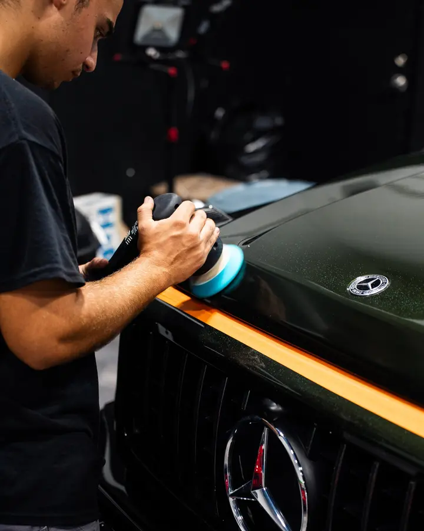
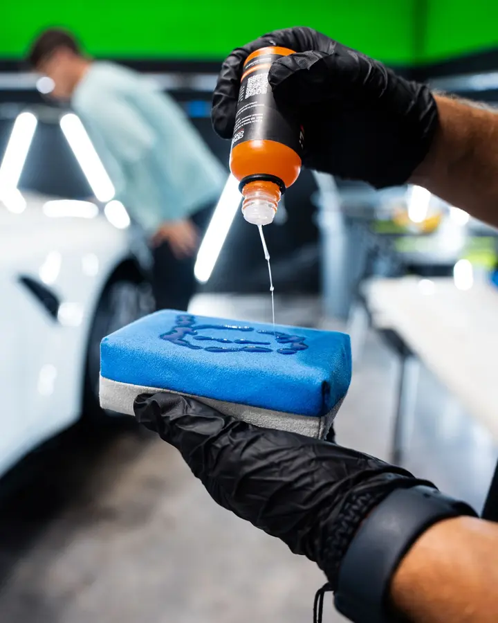
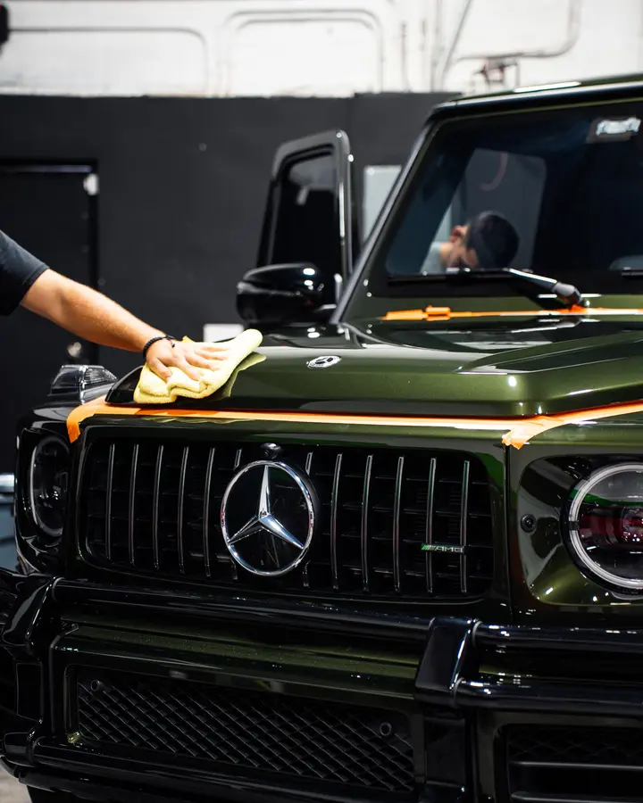

Paint Correction
Machine polishing removes swirls, scratches and water spots to restore deep, true gloss to your paint.
Real defects removed, not filled.
Inspect
Measure paint and check under lights
We find what is really there
Cut
Remove swirls, scratches and etching
Only as much as the paint needs
Refine
Polish to a deep, clear finish
Maximum gloss and clarity
Protect
Finish with sealant, coating or film
Keep the result looking new
Correction levels
We inspect your paint first and recommend only what it needs.
Enhancement
- Light single-stage polish
- Boosts gloss
- Minimal paint removal
- Great for newer cars
One-step
- Cut and polish in one pass
- Removes light swirls
- Improves clarity
- Daily-driver favorite
Multi-stage
- Heavy cut + finish polish
- Deeper defect removal
- Maximum clarity
- For neglected paint
Spot repair
- Wet sanding where needed
- Deep scratch work
- Targeted panels
- Inspected under lights
Real defects removed, not filled.
Polishes that only fill swirls wash out in weeks. Paint correction levels the clear coat so imperfections are gone, and the gloss you see is the paint itself.

Comfort, protection and style
Swirl marks
Fine circular marks from washing disappear.
Light scratches
Scratches in the clear coat are reduced or removed.
Water spots
Mineral etching is polished out where it is shallow.
Deep gloss
A flawless surface gives the best base for ceramic coating or PPF.
Why trust Divine Detailers
We measure the paint, inspect it under proper lighting and only recommend the level of correction your car needs. No upselling, and we will tell you honestly what polishing can and cannot fix.
Restore the gloss you paid for
Everyday washing, dust and water spots leave fine marks that dull the paint. Machine polishing levels the clear coat so those marks are gone, not hidden.
We only correct as much as your paint needs, and we tell you honestly what polishing can and can't fix.
The best base for coating or film
A flawless surface is the first step before ceramic coating or paint protection film, since both lock in whatever is under them.
Many customers combine correction with a coating for a finish that lasts.

Paint that looks new again
After correction, color looks richer and reflections look sharper. It is the biggest visual change you can make without repainting.

Everything you wanted to know
What is paint correction?
Paint correction is the process of removing defects from your paint, such as swirl marks, light scratches, water spots and oxidation. We use machine polishers, compounds and pads to level the clear coat, which brings back clarity, depth and gloss.
How much does paint correction cost?
It depends on the size of the vehicle, how deep the defects go and how many correction stages the paint needs. We inspect the paint first, then quote the level of work that will actually get the result you want, so you do not pay for more than you need.
Can paint correction remove scratches?
It can remove or greatly reduce light to moderate scratches that sit in the clear coat. A scratch deep enough to catch your fingernail has usually gone through the clear coat and may need touch-up or body repair instead.
Is paint correction the same as polishing?
They are related. Polishing is the tool and the final refining step. Paint correction is the full process of assessing the paint, removing defects with a cutting stage if needed, and then polishing to a high gloss.
How do I know if my car needs paint correction?
Look at the paint in direct sunlight. Fine circular swirl marks, hazy or dull areas, water spot rings, faded patches or a rough feel after washing are all signs. If the paint no longer looks as glossy as it should, correction will likely help.
Can I do paint correction myself?
You can, but it takes the right machine, pads, compounds and plenty of practice. Without experience it is easy to burn through clear coat, leave holograms or add new scratches. A professional can measure the paint and work safely within what it can handle.
How long does paint correction take?
From several hours for a light single-stage polish to a day or more for a multi-stage correction on a larger vehicle or heavily damaged paint. We will give you a time estimate when we inspect the car.
Will paint correction remove swirl marks?
Yes. Swirl marks are shallow defects in the clear coat, and polishing levels the surface so they disappear. How much work it takes depends on how deep and widespread they are.
How often should paint correction be done?
Only when the paint needs it. Correction removes a thin layer of clear coat, so it should not be repeated unnecessarily. With good washing habits and a coating or film to protect the finish, many cars need it just once.
What does paint correction fix, and what can't it fix?
It fixes swirl marks from improper washing, water spot etching, light scratches in the clear coat, buffer trails from a previous poor polish and early oxidation. It does not fix deep scratches that go through the clear coat, stone chips or dents. Those need body repair first. We will tell you honestly what correction can and cannot do for your paint.
What is the difference between single-stage and multi-stage correction, and which does my car need?
Single-stage correction is one compound and pad combination, usually a finishing polish. It suits paint with light swirling and otherwise good condition. Multi-stage correction starts with a more aggressive cut to remove deeper defects, then follows with one or more finishing stages to refine the surface to full gloss. We check the paint thickness and inspect it under proper lighting before we recommend a level.
Do you wet sand, and when is it necessary?
When the defect calls for it. Machine polishing handles most clear coat problems, but deep scratches, heavy orange peel, runs from a previous respray or severe water spot etching can need wet sanding first. It removes more clear coat, so we use it selectively and only when polishing alone will not solve the problem.
Can paint correction remove water spot etching?
Light etching often polishes out. Moderate etching may need a more aggressive correction. Etching that has gone through the clear coat can't be polished away and needs spot refinishing. The only way to know for sure is an in-person inspection under good lighting.